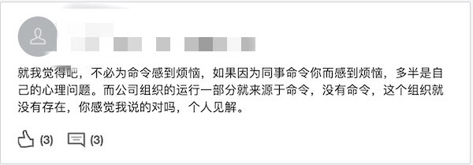
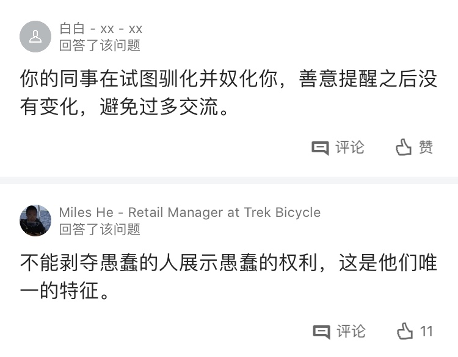
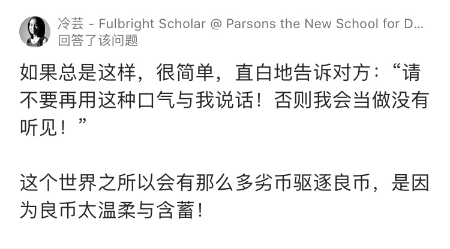
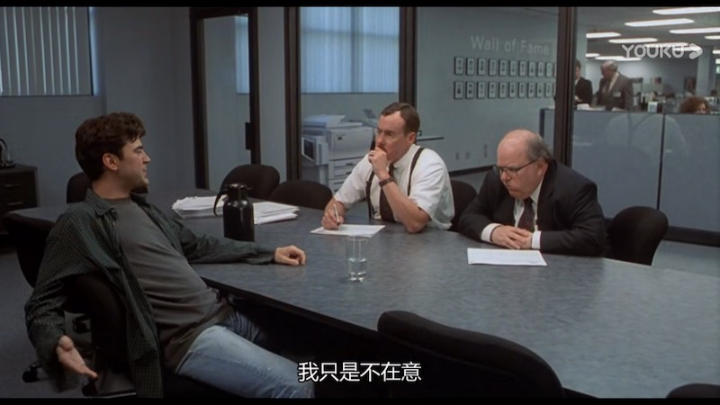

今天在 LinkedIn 看到这样一个职场问题：“同事经常用领导的口吻命令我，我应该怎么办？” 我觉得这个问题在中国职场很有代表性。我自己和我认识的一些人都为此苦恼过，我还为遇到这个问题的朋友提供过帮助。
一些见识短浅，学识，能力和职级都不如自己的人，对自己说话像个“老板”，这是怎么回事？这不是一个简单的问题，而是一个严重的社会风气和文化问题，所以我想谈一下。
首先的问题是，什么是“领导的口吻”？使用这个词汇，表明了说话者的潜意识已经接受了这样的文化，那就是领导应该有“霸气”，要像个发号施令的“霸道总裁”。这是中国企业里常见的现象，职级比别人高一点，就会显示出鄙人的气势来。
在中国社会，“这总那总”的称呼成为常态。不仅平时这样称呼，而且出现在热门电视剧，综艺节目，采访节目。你看看还有哪个国家在用这样严重等级化的称呼？这造成了什么样的国际形象？国产影视作品，请不要再给我们国家和民族丢人现眼了。
这种现象被各种媒体渲染甚至美化。如果你浏览一下国内的视频书籍类服务，就会发现各种“霸道总裁”字样，渲染女性对这种人的跪舔之情。我当然不看低俗内容，但使用视频或者书籍服务，这些封面飘过的时候，总是让人倒胃口，恶心至极。这样的东西被叫做“女生读物”，“畅销精品”，这是什么样的社会？
从国外回来的人，很多已经习惯了平等，对任何人说话都跟朋友一样，心理上并不认为自己高人一等，别人得听自己的。工作上以理服人，就事论事。在中国古代，人们也是尊重德才兼备的君子，不屑于那些霸道和喜欢指使别人的人。很可惜，我发现在当今中国的很多企业里，已经形成了这种发号施令的不良风气。
所以心理上出现“领导的口吻”这种概念，默认了领导有权使用命令的口气，这本身已经说明我们的文化出现了问题，这不是一个现代文明国家应有的文化。现在国家正在大力清理网络不良文化，我觉得应该把这种“霸道总裁”类标题也列入不良内容，加以整顿。应该禁止在影视作品中使用“这总那总”的称呼。我们的文化应该是，没人喜欢这种人，没人愿意跟霸道无理，没素质的人一起工作。
既然领导都无权命令别人，那么同级甚至职级比自己低的人使用这种口气，是怎么回事呢？浏览了 LinkedIn 上的 69 个回答，很多只是表达不满和愤恨等情绪。甚至有一些采用了质疑受害者的口吻：“他真的是那样吗？是不是你自己那么觉得而已？是不是你自己也有什么问题呢？多半是自己的心理问题吧？也许这样对你成长有帮助呢？” 这是常见的“中国式安慰”，火上浇油，甚至是误导。

我只找到一个说中要害的。这个回答来自一个不知名的人，他说：
“你的同事在试图驯化并奴化你，善意提醒之后没有变化，避免过多交流。”
“驯化”和“奴化”说到了点子上。

自从工作以来，我发现有些人深懂职场技巧和心理战术。这种平级同事以“领导的口气”说话，我觉得也是其中一种。之前我推荐过一本书『疯狂的独角兽』，那里面也介绍了一些其它的心理技巧。它们的作用包括驯化，奴化，操纵，甚至可以让人崩溃，不得不“自愿离职”。
面对这样的事情，不能掉以轻心，不要以为“和和气气，对自己有帮助”就可以了事。一旦这种人得逞一次，他就会使用第二次。久而久之，这个同事可能就真的成了你实质上的“领导”，可以指使你去做事，甚至逼你加班。你心里不爽却不知为何，无处发泄，最后导致崩溃，甚至不得不换工作。
另外一些人熬过来了，甚至在这种环境中爬到一定高度。可是你会发现他们已经在内心被奴化了，他们支持和崇拜曾经虐待他们的人，最后他们变成那种人。这就叫做“斯德哥尔摩综合征”——被虐待的人开始崇拜他们的虐待者。在这样的环境里，谁表现得更霸道谁就升职，就形成了恶性循环，导致不能坚持原则的人变成那种样子，形成整个企业，甚至整个社会的风气恶化。
你发现了吗？这种现象很像现在流行的冠状病毒。你要是包容它，掩盖它，就会导致大面积的传染。
那么如何对待这种人呢？我给遇到这种现象的人推荐的方式是：不理他。就像我们对待病毒戴上口罩一样，把它隔离在外。如果他用命令的口气叫你做什么，你可以就像耳边风，没听见一样。古人云“非礼勿视，非礼勿听，非礼勿言”，说的正好。如果耳朵收到没有礼貌的语言，让它直接从另外一边出去。被人忽略，是对这种人有力的警告和回击，因为他已经不被当做文明人对待。

稍微有点理解力的人都应该知道是怎么回事，这样你就迫使他调整态度。如果他继续使用命令口气，甚至当你不搭理的时候，走到你面前来咄咄逼人，那么你可以轻描淡写告诉他：“请注意一下你的口气，否则我会当做没有听见。” 你甚至可以面带微笑说这句话，然后扭头不理他或者慢悠悠的走开。你不是朝他微笑，而只是表明他在你心里完全没有位置，影响不了你的情绪。微笑是因为你属于文明社会，心里有很多善良的人跟你在一起。

善良的人们应该互相支持，不容忍这种玩弄权术的人。如果遇到这种现象，应该跟友好的同事私下沟通，很有可能他们也知道这个情况，也被这个人命令和指使过。他们会从心理上支持你，使你不再压抑。当内心有了支持，你就可以更加自信的忽略这种人的指使。或者迫使他们改变态度，或者联合起来使他们失去地位，迫使他们离开。
从企业的角度，我觉得管理者应该意识到这个问题的严重性。一个企业出现这种现象，会导致提拔奸人，流失人才，决策错误，走向末路。应该从制度上防止这种现象的发生，进行反对这种风气的宣传和讲座，制定相应的规章制度，给员工提供方便而私密的渠道越级汇报这种问题。管理者应该请存在这种问题的员工谈话，加以警告，要求他们改变态度，告诉他们公司不容忍这种现象。这样主动预防，形成良好的文化，成为大家喜欢工作的地方。
这个 LinkedIn 回答里有一句话值得大家警醒：“这个世界之所以有那么多劣币驱逐良币，是因为良币太温柔与含蓄！” 善良的人必须联合起来，互相支持，毫不让步，才能防止逆向淘汰，形成社会性的不良风气。